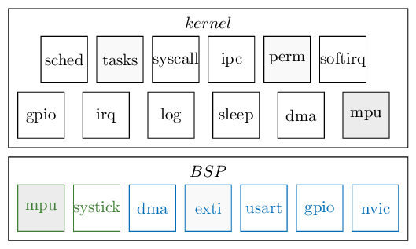
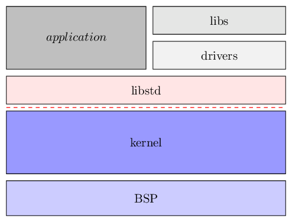

5. EwoK microkernel¶

5.1. What is EwoK ?¶
EwoK is a microkernel targeting micro-controllers and embedded systems aiming at building secure and trusted devices.
Drivers are hold in userspace. Unlike most of other microkernels, the goal is to support complex drivers (ISO7816, USB, CRYP, SDIO) while achieving high performances.
5.1.1. Security properties¶
EwoK supports the following properties:
- Strict memory partitioning
- Strict partitioning of physical resources (devices, etc.)
- Fixed permissions management, set at compile time and easily verifiable
- Kernel Random Number Generation support (based on True RNG HW on STM32)
- Stack smashing protection in both kernel and userspace tasks
- Userspace Heap smashing defenses
- Proved W^X memory mappings
- Strict temporal separation between declarative phase and execution phase
5.1.2. Performances¶
Unlike other microkernels, EwoK allows userland drivers to use DMA, GPIOs and EXTIs with the help of some specific syscalls. Such interfaces are directly implemented in the kernel, in order to achieve better performance. Indeed, some hardware need a very responsive software and such responsiveness can not easily be achieved in a typically minimalistic microkernel (like the ones from the L4 family).
5.2. EwoK architecture¶
5.2.1. Kernel architecture¶
The kernel is divided into two main components: the libbsp and the kernel parts.
The libbsp is the hardware abstraction layer, hosting all the low level and arch-specific drivers (MPU, GPIOs, timers, DMAs, etc.). The libbsp is itself separated in two blocks:
- SoC-specific drivers, such as DMA or GPIO support for the STM32F407 board
- Core-specific drivers, such as MPU support for the Cortex-M4 ARMv7m micro-architecture
The kernel part contains all specific high level content (scheduling, task management, syscalls, etc.) and uses the libbsp as a hardware abstraction for any low-level interaction.
5.2.2. Drivers¶
The lib_std (libstd) is a C standard library that can be used by the user tasks (and hence the userspace drivers). Like the libc for UNIX-like systems, it implements some useful functions.
The drivers are written as userspace libraries. They depend on the libstd, and may sometimes depend on each others. Here is the list of the existing drivers.
Libraries bring various userspace features with arch-independent implementations.
5.3. EwoK API¶
EwoK is tuned for high performance embedded systems. The whole microkernel architecture and the provided API are specifically designed for this purpose. Note that for these specific performance constraints, EwoK is not a full-IPC driven microkernel, like the L4 family.
The EwoK API is described here: